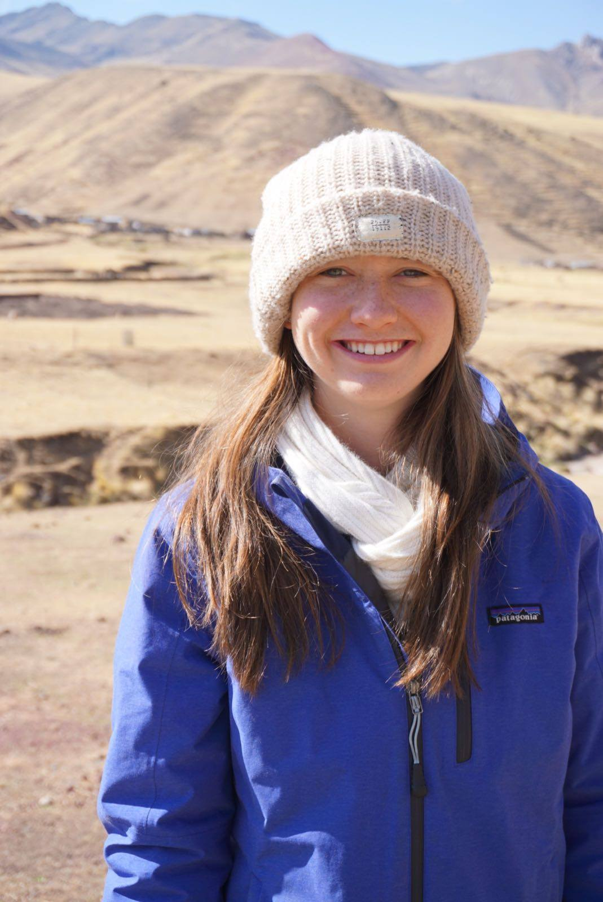

Hello!
Hello! I am a PhD student in the Department of Psychology at Yale University. I primarily work with Dr. Nick Turk-Browne and Dr. BJ Casey. I also work with the Krishnaswamy Lab in the Department of Computer Science and Department of Genetics at Yale. My work lies at the intersection of human learning and machine learning. I am interested in the computational principles of human brain activity that enable and constrain learning new skills, and manipulating those to facillitate more efficient learning. I also enjoy developing and applying novel analysis techniques to explore individual differences questions with fMRI data. I completed my undergraduate degree in Cognitive Science, Computer Science, and Spanish at Dartmouth College in winter of 2020, where I worked with Dr. Jim Haxby and Dr. Caroline Robertson 
Papers
Busch, E.B., Rapuano, K.M., Anderson, K.M., Rosenberg, M.D., Watts, R., Casey, BJ, Haxby, J.V., & Feilong, M. (Under review). The LEGO theory of the developing functional connectome. bioRxiv
Busch, E.B., Huang, J., Benz, A., Wallenstein, T., Lajoie, G., Wolf, G., Krishnaswamy, S.*, & Turk-Browne, N.B.* (Submitted). Temporal PHATE: A multi-view manifold learning method for brain state trajectories. bioRxiv
Huang, J.*, Busch, E.B.*,Wallenstein, T.*, Gerasimiuk, M., Benz, A., Lajoie, G., Wolf, G., Turk-Browne, N.B., Krishnaswamy, S. (Under review).Learning shared neural manifolds from multi-subject FMRI data. arXiv
Busch, E.B.*,, Slipski, L.*, Feilong, M., Guntupalli, J.S., Visconti di Oleggio Castello, M., Huckins, J.F., Nastase, S.A., Gobbini, M.I.,Wager, T.D., Haxby, J.V. (2021). Hybrid hyperalignment: A single high-dimensional model of shared information embedded in cortical patterns of response and functional connectivity. NeuroImage, 233, 117975. Paper Code
Posters
Busch, E.B., Rapuano, K.M., Anderson, K.M., Rosenberg, M.D., Watts, R., Casey, BJ, Haxby, J.V., & Feilong, M. Heritable template underlies reliable idiosyncrasies in the developing fine-scale connectome. (2022) Organization for Human Brain Mapping Annual Meeting.
Letrou, A., Busch, E.L., & Turk-Browne, N.B., (2022). Relating neural dynamics and meotion dynamics with nonlinear manifold learning. Poster at the Social and Affective Neurosience Society Annual Meeting.
Walton, A.E., Nizzi, M.C., West, B., Mofe, E., Roth, R.M., Busch, E.L., Holtzheimer, P.E., Roskies A.L. (2021). The impact of anxiety and depression on dimensions of agency. Virtual poster presentation at the Seventh Annual NIH BRAIN Initiative Annual Meeting.
Sivitilli, D.M., Weertman, W.L., Busch, E.L., Ullmann, J.F., Smith, J.R., Gire, D.H. (2021). Strategies of single arm foraging in Octopus rubescens in the absence of visual feedback. Society for Integrative and Comparative Biology.
Busch, E.L., Haskins, A.J., Isik, L., Robertson, C.E. (2020) A deep learning approach to understanding real-world scene perception in autism. Poster and presentation presented at the Presidential Undergraduate Research Symposium (Dartmouth College). Walton, A.E., Busch, E.L., Ratoff, W., Smith, W., Holtzheimer, P.E., Roskies, A.L. (2020). Developing an agency assessment tool for understanding changes in agency with neurointerventions: Preliminary results. Virtual poster presentation at the Sixth Annual NIH BRAIN Initiative Annual Meeting. Botch, T.L., Busch, E.L., Robertson, C.E. (2020). Application of deep neural networks to model omnidirectional gaze behavior in immersive VR. Poster presented the Vision Sciences Society Annual Meeting. Busch, E.L., Sivitilli, D.M., Gire, D.H. (2019). Using deep learning to model octopus arm motion. Poster and talk presented at the Center for Neurotechnology Research Symposium (University of Washington). Busch, E.L., Ma, F., Nastase, S.A., Haxby, J.V. (2019). Individual differences in fine-grained neural correlates of mental states. Poster presented at the Wetterhahn Science Symposium (Dartmouth College).